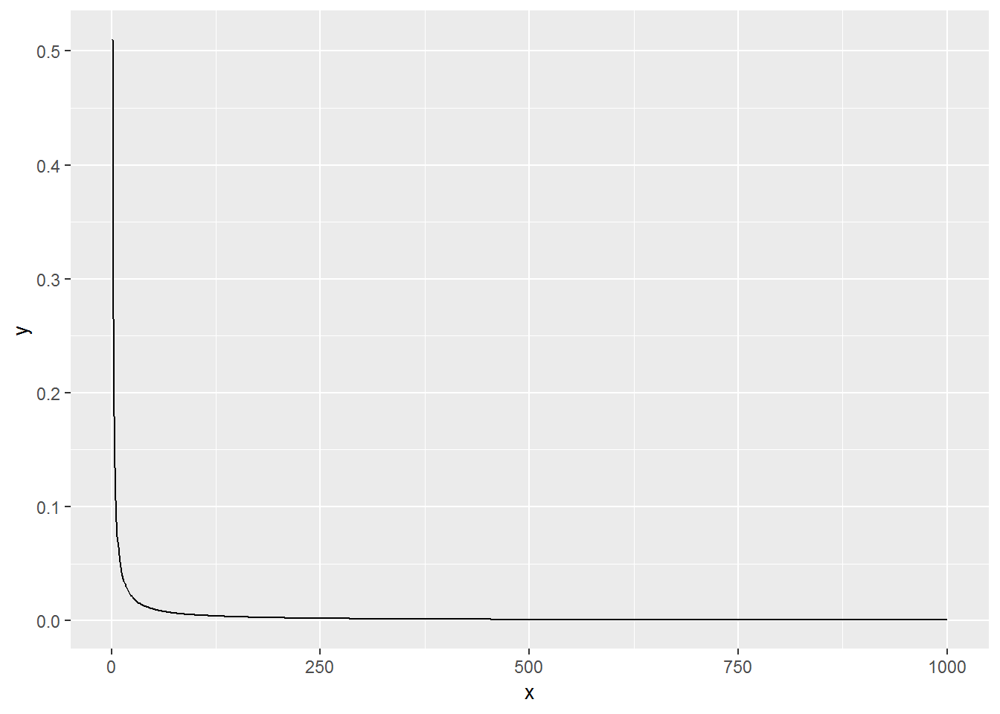

Chapter 11 Convergence of random variables
This chapter deals with convergence of random variables.
The students are expected to acquire the following knowledge:
Theoretical
- a
R
- a
11.1 Convergences
Exercise 1.1 Let \(X_1\), \(X_2\),…, \(X_n\) be a sequence of Bernoulli random variables. Let \(Y_k = \frac{X_1 + X_2 + ... + X_n}{n^2}\). Show that this sequence converges point-wise to the zero random variable. R: Use a simulation to check your answer.
Solution. Let \(\epsilon\) be arbitrary. We need to find such \(n_0\), that for every \(n\) greater than \(n_0\) \(|Y_n| < \epsilon\) holds.
\[\begin{align} |Y_n| &= |\frac{X_1 + X_2 + ... + X_n}{n^2}| \\ &\leq |\frac{n}{n^2}| \\ &= \frac{1}{n}. \end{align}\] So we need to find such \(n_0\), that for every \(n > n_0\) we will have \(\frac{1}{n} < \epsilon\). So \(n_0 > \frac{1}{\epsilon}\).
x <- 1:1000
X <- matrix(data = NA, nrow = length(x), ncol = 100)
y <- vector(mode = "numeric", length = length(x))
for (i in 1:length(x)) {
X[i, ] <- rbinom(100, size = 1, prob = 0.5)
}
X <- apply(X, 2, cumsum)
tmp_mat <- matrix(data = (1:1000)^2, nrow = 1000, ncol = 100)
X <- X / tmp_mat
y <- apply(X, 1, mean)
ggplot(data.frame(x = x, y = y), aes(x = x, y = y)) +
geom_line()
Exercise 4.1 WASSERMAN. CHECK SOLUTIONS WITH ERIK! Let \(X_n \sim \text{N}(0, \frac{1}{n})\) and let \(X\) be a random variable with CDF \[\begin{align} F_X(x) = \begin{cases} 0, &x < 0 \\ 1, &x \geq 0. \end{cases} \end{align}\] Does \(X_n\) converge to \(X\) in distribution? How about in probability? Prove or disprove these statement. R: Plot the CDF of \(X_n\) for \(n = 1, 2, 5, 10, 100, 1000\).
Solution. Let us first check convergence in distribution. \[\begin{align} \lim_{n \rightarrow \infty} F_{X_n}(x) &= \lim_{n \rightarrow \infty} \phi (\frac{x}{n^{-1}}). \end{align}\] We have two cases, for \(x < 0\) and \(x > 0\). We do not need to check for \(x = 0\), since \(F_X\) is not continuous in that point. \[\begin{align} \lim_{n \rightarrow \infty} \phi (\frac{x}{n^{-1}}) = \begin{cases} 0, & x < 0 \\ 1, & x > 0. \end{cases} \end{align}\] This is the same as \(F_X\).
Let us now check convergence in probability. Since \(X\) is a point-mass distribution at zero, we have \[\begin{align} \lim_{n \rightarrow \infty} P(|X_n| > \epsilon) &= \lim_{n \rightarrow \infty} (P(X_n > \epsilon) + P(X_n < -\epsilon)) \\ &= \lim_{n \rightarrow \infty} (1 - P(X_n < \epsilon) + P(X_n < -\epsilon)) \\ &= \lim_{n \rightarrow \infty} (1 - \phi(\sqrt{n} \epsilon) + \phi(- \sqrt{n} \epsilon)) \\ &= 0. \end{align}\]
n <- c(1,2,5,10,100,1000)
ggplot(data = data.frame(x = seq(-5, 5, by = 0.01)), aes(x = x)) +
stat_function(fun = pnorm, args = list(mean = 0, sd = 1/1), aes(color = "sd = 1/1")) +
stat_function(fun = pnorm, args = list(mean = 0, sd = 1/2), aes(color = "sd = 1/2")) +
stat_function(fun = pnorm, args = list(mean = 0, sd = 1/5), aes(color = "sd = 1/5")) +
stat_function(fun = pnorm, args = list(mean = 0, sd = 1/10), aes(color = "sd = 1/10")) +
stat_function(fun = pnorm, args = list(mean = 0, sd = 1/100), aes(color = "sd = 1/100")) +
stat_function(fun = pnorm, args = list(mean = 0, sd = 1/1000), aes(color = "sd = 1/1000")) +
stat_function(fun = pnorm, args = list(mean = 0, sd = 1/10000), aes(color = "sd = 1/10000"))
Exercise 1.4 WASSERMAN. Let \(X_i\) be i.i.d. and \(\mu = E(X_1)\). Let variance of \(X_1\) be finite. Show that the mean of \(X_i\) converges in quadratic mean to \(\mu\).
Solution. \[\begin{align} \lim_{n \rightarrow \infty} E(|\bar{X_n} - \mu|^2) &= \lim_{n \rightarrow \infty} E(\bar{X_n}^2 - 2 \bar{X_n} \mu + \mu^2) \\ &= \lim_{n \rightarrow \infty} (E(\bar{X_n}^2) - 2 \mu E(\frac{\sum_{i=1}^n X_i}{n}) + \mu^2) \\ &= \lim_{n \rightarrow \infty} E(\bar{X_n})^2 - \lim_{n \rightarrow \infty} Var(\bar{X_n}) - 2 \mu^2 + \mu^2 \\ &= \lim_{n \rightarrow \infty} \frac{n^2 \mu^2}{n^2} - \lim_{n \rightarrow \infty} \frac{\sigma^2}{n} - \mu^2 \\ &= \mu^2 - \mu^2 - \lim_{n \rightarrow \infty} \frac{\sigma^2}{n} \\ &= 0. \end{align}\]